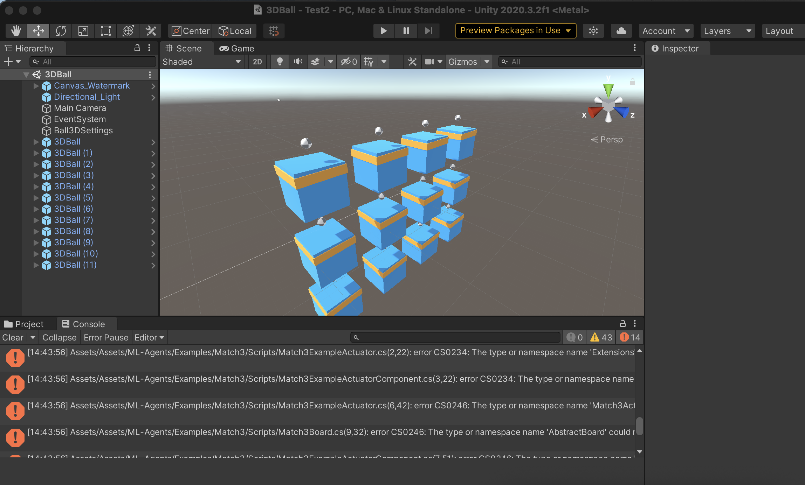
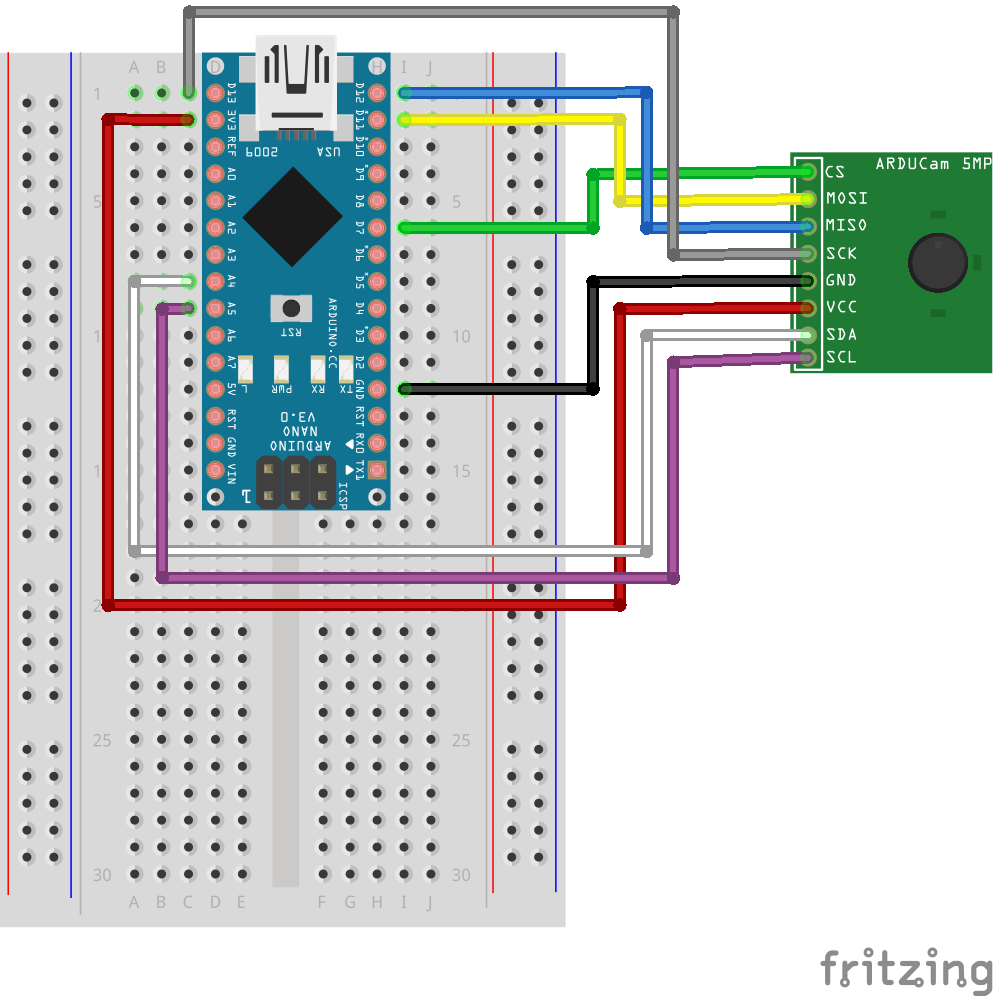
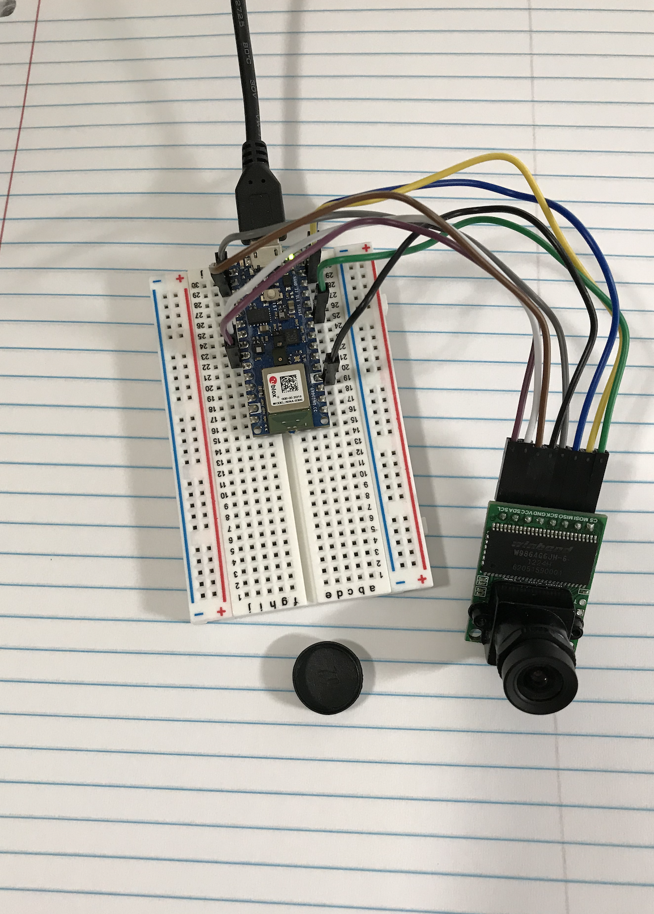
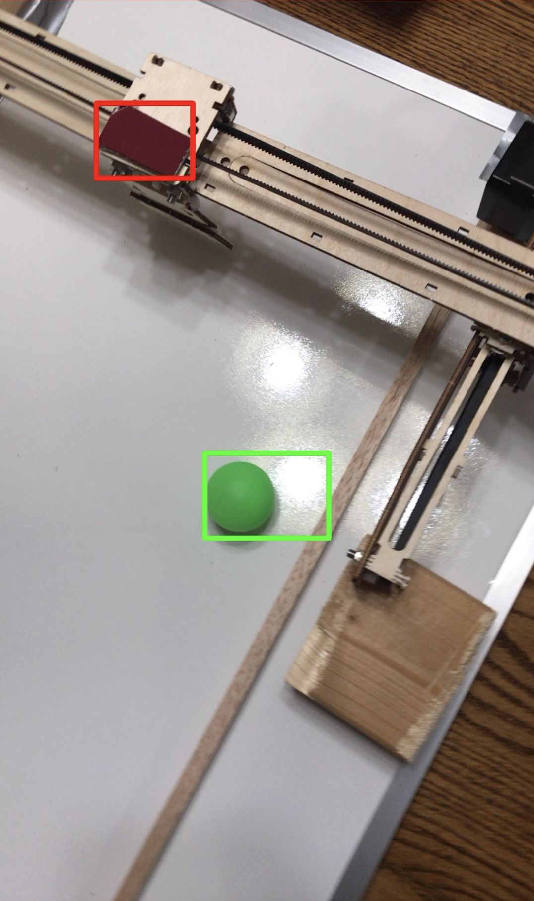
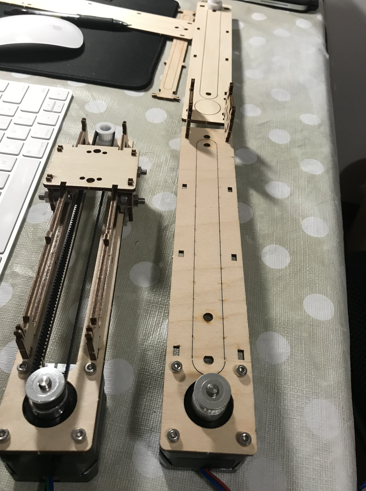
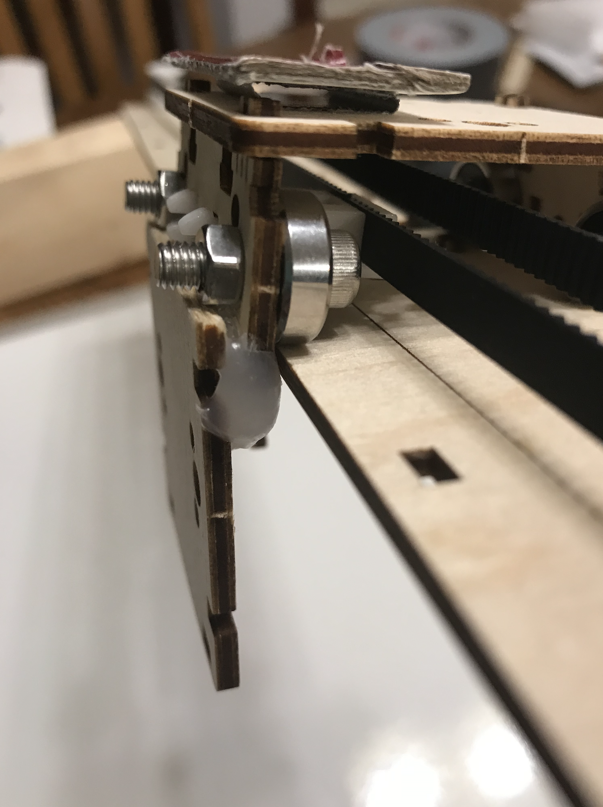
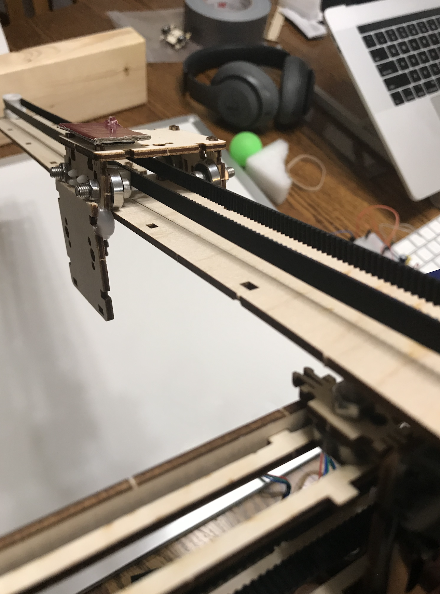
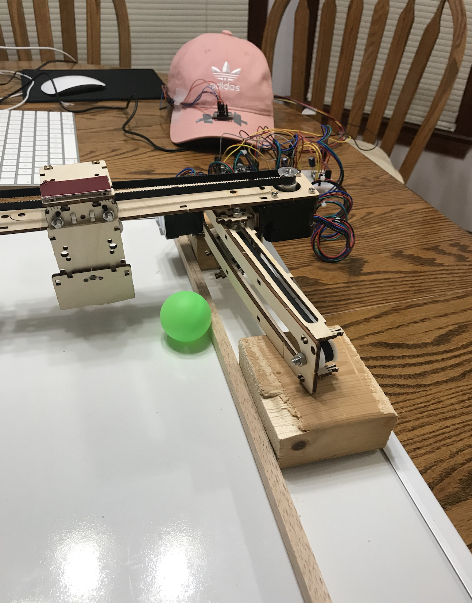
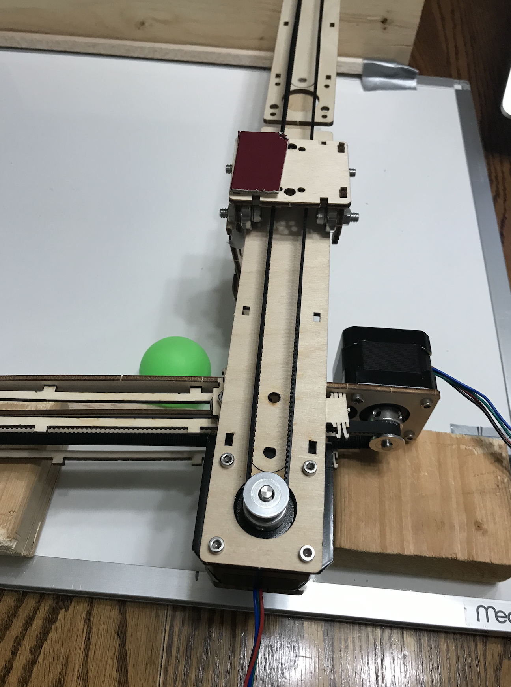
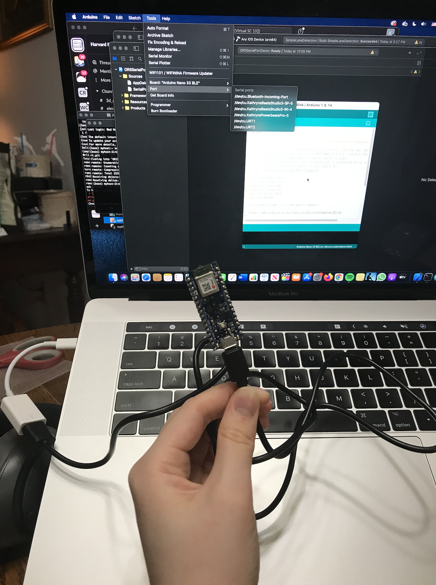

Final Project Process/Showcase Page
Motivation
The goal for my project was to create an version of an Air Hockey table with an automated opponent. This was interesting to me because I liked the potential of working with steppers, venturing into RL, and using computer vision. The exact configuration could go in many directions, and although that means I will be working with much uncertainty, it also means that I have a lot of room to experiment and prototype, which is a core reason I took this class! The details of my efforts on this ideal now follow.My ideal end result will include camera-enabled detection of stick and puck locations to send motor commands, with stepper motors controlling the x-y position of the stick.
First, here's my Demo Video:
And also a demo of just the Bluetooth side. The reasons for this being separate will become clear shortly.
April 13, 2021:
This week, I focused on getting Unity ML Agents up and running. I followed this installation documentation on the software's GitHub repository, installing Unity Hub, Unity, and the ML-Agents library.However, upon attempting to load the 3D Ball example mentioned in this beginner tutorial I received a multitude of compiler warnings.

Currently, I am attempting to work through those, and I believe it is because I was not using the same version of ML-Agents between the package repository and the Unity Package Manager. These files are all very large, so installation takes a while, but I will update further once this issue is resolved and I can play the example simulation!
April 20, 2021:
After coming across this discussion thread I realized my error was due to the fact that I needed the ml-agent git repo and it's associated package.json files, which had to be added in Unity under packages manually.The result, after removing the Tests folder, is that I can now run sample environments without issue!
My next step will be to get this GitHub repo up and running, although I will need to replace the objects most likely. For exapmle, I will likely be using a ball rather than a puck since I likely won't have a super slick surface to work with. I will also need to considerthe real world effects of friction as well as the force/speed that I can achieve with the stepper motor carriages. If necessary, I might need to change to an xy-plotter design for more fluid motion, although I will need to weigh down the "hockey sticks" somehow.
April 27, 2021:
This week, I identified the major pieces of my project moving forward to create a comprehensive plan of action for my air hockey project. Here are the main points:First, puck position sensing. After discussing several options with Nathan, I decided that the easiest method to detect the puck's position and respond to it would be through using a camera and image-matting with OpenCV. This would give faster results than capacitive sensing alternatives. The issue for me is that the ESP32-CAM is not working, so I needed to see if I could get images from my ArduCAM with my available boards. This is the issue I focused on debugging this week.
Second, the "hockey stick" using a linear carriage. I will need to connect two linear carriages in order to achieve xy-positioning to respond to the puck. To conserve materials, I will only make one automated "player" and I will serve as the human opponent. If there is too much friction still with this setup, as experienced by some of my classmates, I may default to experimenting with xy-plotter design A lot of experimentation will be necessary to see what maximum velocity I can achieve as well as how quickly the pipeline can respond to changes in puck positioning.
This week, I will attempt to unify these pieces into a simple design - having the automated player detect the puck position and move in-line with it to block it from hitting the opposite wall of the setup. With sufficient time, I will replace this with an RL trained model to determine commands.
My preliminary bill of materials is as follows:
1. 2 x lasercut linear carriage wood piece sets, Stepper Motor, timing belt, timing belt clip, 4 bearings, 12 M3x8 screws for steppers, 12 M5x0.8x16 screws for bearings, 12 M5 washers, 12 M3 washers
2. 1 Arduino ArduCAM + 8 M-F Wires
3. 1 Adafruit Metro MO board
4. 1 Arduino Nano 33 BLE Sense
5. 1 Puck / balls
6. 1 White Dry-erase board (slick surface for puck)
This week I focused on getting the ArduCAM up and running with a board.
Firstly, I attempted to connect it to the Metro using this pin connection scheme:

I installed the necessary libraries using this GitHub repo
I was getting some issues running the setup lines, which verified proper pin connections, etc. I used the following code to ensure that i2c communication was working, as per this discussion thread's suggestion.
#include
void setup()
{
Wire.begin();
Serial.begin(9600);
Serial.println("\nI2C Scanner");
}
void loop()
{
byte error, address;
int nDevices;
Serial.println("Scanning...");
nDevices = 0;
for(address = 1; address < 127; address++ )
{
// The i2c_scanner uses the return value of
// the Write.endTransmisstion to see if
// a device did acknowledge to the address.
Wire.beginTransmission(address);
error = Wire.endTransmission();
if (error == 0)
{
Serial.print("I2C device found at address 0x");
if (address<16)
Serial.print("0");
Serial.print(address,HEX);
Serial.println(" !");
nDevices++;
}
else if (error==4)
{
Serial.print("Unknow error at address 0x");
if (address<16)
Serial.print("0");
Serial.println(address,HEX);
}
}
if (nDevices == 0)
Serial.println("No I2C devices found\n");
else
Serial.println("done\n");
delay(5000); // wait 5 seconds for next scan
}
This was working, but after some additional error, I realized the SPI connection was failing using the digital pins since I needed to use the Metro's SCK, MISO, and MOSI-specific pins. However, the example sketches that came with the library were still failing upon attempting to send information between camera and board, and after doing some research, I realized that the camera worked best with the tested Arduino Uno board, and would also work with the Arduino Nano BLE Sense that I had, but not an Adafruit board. Here's what the final setup looked like after doing the replacement:

After reloading the 2D capture example from the ArduCAM library, with the camera now hooked up to the Nano, I successfully got image capture! Although this example, wanted me to save the result to an SD card connected on Pin 9, I was able to get successful capture and can use the remaining lines to transfer the image bytes from the buffer array to some other display. The ArduCAM has a built in host system for viewing these images, but from my research and this discussion thread it seems that it only works on Windows. However, I've worked with this camera before to successfully capture and classify images with TFlite, so I think with some work on transferring the data between devices, I should be able to visualize and latter apply an OpenCV filter for a certain colors down the line. The code for image capture is below:
#include
#include
#include
#include
#include "memorysaver.h"
//This demo can only work on OV5640_MINI_5MP_PLUS or OV5642_MINI_5MP_PLUS platform.
#if !(defined (OV5640_MINI_5MP_PLUS)||defined (OV5642_MINI_5MP_PLUS))
#error Please select the hardware platform and camera module in the ../libraries/ArduCAM/memorysaver.h file
#endif
#define FRAMES_NUM 0x06
// set pin 7 as the slave select for the digital pot:
const int CS = 7;
//#define SD_CS 9
bool is_header = false;
int total_time = 0;
#if defined (OV5640_MINI_5MP_PLUS)
ArduCAM myCAM(OV5640, CS);
#else
ArduCAM myCAM(OV5642, CS);
#endif
uint8_t read_fifo_burst(ArduCAM myCAM);
void setup() {
// put your setup code here, to run once:
uint8_t vid, pid;
uint8_t temp;
#if defined(__SAM3X8E__)
Wire1.begin();
#else
Wire.begin();
#endif
Serial.begin(115200);
Serial.println(F("ArduCAM Start!"));
// set the CS as an output:
pinMode(CS, OUTPUT);
digitalWrite(CS, HIGH);
// initialize SPI:
SPI.begin();
//Reset the CPLD
myCAM.write_reg(0x07, 0x80);
delay(100);
myCAM.write_reg(0x07, 0x00);
delay(100);
while(1){
//Check if the ArduCAM SPI bus is OK
myCAM.write_reg(ARDUCHIP_TEST1, 0x55);
temp = myCAM.read_reg(ARDUCHIP_TEST1);
if(temp != 0x55)
{
Serial.println(F("SPI interface Error!"));
delay(1000);continue;
}else{
Serial.println(F("SPI interface OK."));break;
}
}
#if defined (OV5640_MINI_5MP_PLUS)
while(1){
//Check if the camera module type is OV5640
myCAM.rdSensorReg16_8(OV5640_CHIPID_HIGH, &vid);
myCAM.rdSensorReg16_8(OV5640_CHIPID_LOW, &pid);
if ((vid != 0x56) || (pid != 0x40)){
Serial.println(F("Can't find OV5640 module!"));
delay(1000); continue;
}else{
Serial.println(F("OV5640 detected."));break;
}
}
#else
while(1){
//Check if the camera module type is OV5642
myCAM.rdSensorReg16_8(OV5642_CHIPID_HIGH, &vid);
myCAM.rdSensorReg16_8(OV5642_CHIPID_LOW, &pid);
if ((vid != 0x56) || (pid != 0x42)){
Serial.println(F("Can't find OV5642 module!"));
delay(1000);continue;
}else{
Serial.println(F("OV5642 detected."));break;
}
}
#endif
//Initialize SD Card
//while(!SD.begin(SD_CS))
//{
// Serial.println(F("SD Card Error!"));delay(1000);
//}
//Serial.println(F("SD Card detected."));
//Change to JPEG capture mode and initialize the OV5640 module
myCAM.set_format(JPEG);
myCAM.InitCAM();
myCAM.set_bit(ARDUCHIP_TIM, VSYNC_LEVEL_MASK);
myCAM.clear_fifo_flag();
myCAM.write_reg(ARDUCHIP_FRAMES, FRAMES_NUM);
}
void loop() {
// put your main code here, to run repeatedly:
myCAM.flush_fifo();
myCAM.clear_fifo_flag();
#if defined (OV5640_MINI_5MP_PLUS)
myCAM.OV5640_set_JPEG_size(OV5640_320x240);delay(1000);
#else
myCAM.OV5642_set_JPEG_size(OV5642_320x240);delay(1000);
#endif
//Start capture
myCAM.start_capture();
Serial.println(F("start capture."));
total_time = millis();
while ( !myCAM.get_bit(ARDUCHIP_TRIG, CAP_DONE_MASK));
Serial.println(F("CAM Capture Done."));
total_time = millis() - total_time;
Serial.print(F("capture total_time used (in miliseconds):"));
Serial.println(total_time, DEC);
total_time = millis();
read_fifo_burst(myCAM);
total_time = millis() - total_time;
Serial.print(F("save capture total_time used (in miliseconds):"));
Serial.println(total_time, DEC);
//Clear the capture done flag
myCAM.clear_fifo_flag();
delay(5000);
}
uint8_t read_fifo_burst(ArduCAM myCAM)
{
uint8_t temp = 0, temp_last = 0;
uint32_t length = 0;
static int i = 0;
static int k = 0;
char str[8];
File outFile;
byte buf[256];
length = myCAM.read_fifo_length();
Serial.print(F("The fifo length is :"));
Serial.println(length, DEC);
if (length >= MAX_FIFO_SIZE) //8M
{
Serial.println("Over size.");
return 0;
}
if (length == 0 ) //0 kb
{
Serial.println(F("Size is 0."));
return 0;
}
Here are the stats from the capture:
 It seems that capture takes around 7 seconds, which is definitely not great. I will need to see if this can be improved or if I will need to embed an accelerometer on the puck or use a different camera (IPhone camera?) to get the data I need.
It seems that capture takes around 7 seconds, which is definitely not great. I will need to see if this can be improved or if I will need to embed an accelerometer on the puck or use a different camera (IPhone camera?) to get the data I need.
May 13, 2021:
As my project stages coalesced, I saw the process come together as a series of constrained problems. The reason for this is that I (a) did not begin with a completely developed prototype plan and (b) ran into several unexpected setbacks. However, the situation lent itself well to creative prototyping and I found myself actively recalling what I learned particularly in the kinetic sculpture and Bluetooth communication weeks.For ease of reading, the rest of the documentation will follow the repeated outline of: goal, constraints, solution, steps, resource summary. Rather than linking the resources in the text, since there are so many, I'll summarize and link them all at the bottom of the relevant section.
Stage #1: Vision-Enabled Gameplay
Goal:
Get visual input to one of my boards to facilitate motor commands that align the striker with the puck accurately and quickly. From my research of similar implementations of this project, CV is the standard for puck position detection, as alternatives are slower or give less reliable data.Constraints:
1. No ESP32 boards function with my version of macOS due to a recent change in how apple handles kernel extensions, of which SiLabs' USB to UART driver is one. This prevents me from connecting to the port where the board is located and using boards handily equipped with key WIFI and BLE communication protocols. My remaining options are Serial communication or to find some other board.2. I only own enough IR Transistors and IR LEDs to create one (unreliable) depth sensor. Similarly, after discussiong alternatives to the CV solution with course staff, it seems like vision will definitely give the strongest results and should be the ideal to shoot for.
3. Since my hardward setup could change a lot, a low-calibration solution would be ideal.
Solution: Realizing I had an Arduino Nano 33 BLE Sense from a previous Harvard course (CS249: TinyML). Coupled with the ArduinoBLE library, I could
Stage 1(a):
Understand the ArduinoBLE library and how central/peripheral communication happens.Since I wanted to send data from my iPhone to the Arduino, and not the other way around, I learned that I needed to set my iPhone up to be a BLE Central and my Arduino to be a BLE Peripheral. Depending on the code, I also needed to be sure that I used the appriate "Write", "Read", etc. settings and created services and characteristics of those services that would transmit my data. I wanted to have a coordinate service that had the characteristics of striker and puck x and y coordinates (4 total characteristics), by the time my prototyping finished. The below code allows me to create those services and is inspired by the "ButtonLED" Arduino BLE example.
#include
#include
const int stepPin = 13; // blue
const int dirPin = 12; // orange
BLEService ledService("b4250400-fb4b-4746-b2b0-93f0e61122c6"); // create service
// create switch characteristic and allow remote device to read and write
BLEByteCharacteristic ballxCharacteristic("b4250401-fb4b-4746-b2b0-93f0e61122c6", BLERead | BLEWrite | BLEWriteWithoutResponse);
BLEByteCharacteristic ballyCharacteristic("b4250402-fb4b-4746-b2b0-93f0e61122c6", BLERead | BLEWrite | BLEWriteWithoutResponse);
BLEByteCharacteristic stickxCharacteristic("b4250403-fb4b-4746-b2b0-93f0e61122c6", BLERead | BLEWrite | BLEWriteWithoutResponse);
BLEByteCharacteristic stickyCharacteristic("b4250404-fb4b-4746-b2b0-93f0e61122c6", BLERead | BLEWrite | BLEWriteWithoutResponse);
// create button characteristic and allow remote device to get notifications
//BLEByteCharacteristic buttonCharacteristic("19B10012-E8F2-537E-4F6C-D104768A1214", BLERead | BLENotify);
AccelStepper stepper(1, stepPin, dirPin); // initialise accelstepper for a two wire board
void setup() {
Serial.begin(9600);
while (!Serial);
pinMode(ledPin, OUTPUT); // use the LED as an output
pinMode(buttonPin, INPUT); // use button pin as an input
// begin initialization
if (!BLE.begin()) {
Serial.println("starting BLE failed!");
while (1);
}
// set the local name peripheral advertises
BLE.setLocalName("ButtonLED");
// set the UUID for the service this peripheral advertises:
BLE.setAdvertisedService(ledService);
// add the characteristics to the service
ledService.addCharacteristic(ballxCharacteristic);
ledService.addCharacteristic(ballyCharacteristic);
ledService.addCharacteristic(stickxCharacteristic);
ledService.addCharacteristic(stickyCharacteristic);
// ledService.addCharacteristic(buttonCharacteristic);
// add the service
BLE.addService(ledService);
ballxCharacteristic.writeValue(0);
ballyCharacteristic.writeValue(0);
stickxCharacteristic.writeValue(0);
stickyCharacteristic.writeValue(0);
// buttonCharacteristic.writeValue(0);
// start advertising
BLE.advertise();
Serial.println("Bluetooth device active, waiting for connections...");
}
void loop() {
// poll for BLE events
BLE.poll();
int ballx;
int bally;
int stickx;
int sticky;
if (ballxCharacteristic.written()) {
// update LED, either central has written to characteristic or button state has changed
if (ballxCharacteristic.value()) {
Serial.print("Ball x:");
Serial.println(ballxCharacteristic.value());
ballx = ballxCharacteristic.value();
} else {
Serial.println("Ball x OFF!!!");
}
}
if (ballyCharacteristic.written()) {
// update LED, either central has written to characteristic or button state has changed
if (ballyCharacteristic.value()) {
Serial.print("Ball y:");
Serial.println(ballyCharacteristic.value());
bally = ballyCharacteristic.value();
} else {
Serial.println("Ball y OFF!!!");
}
}
if (stickxCharacteristic.written()) {
// update LED, either central has written to characteristic or button state has changed
if (stickxCharacteristic.value()) {
Serial.print("Stick x:");
Serial.println(stickxCharacteristic.value());
stickx = stickxCharacteristic.value();
} else {
Serial.println("Stick x OFF!!!");
}
}
if (stickyCharacteristic.written()) {
// update LED, either central has written to characteristic or button state has changed
if (stickyCharacteristic.value()) {
Serial.print("Stick y:");
Serial.println(stickyCharacteristic.value());
sticky = stickyCharacteristic.value();
} else {
Serial.println("Stick y OFF!!!");
}
}
if (ballx - stickx >10){
stepper.setMaxSpeed(4000);
stepper.setAcceleration(700);
stepper.run();
}
else if (ballx - stickx < -10) {
stepper.setMaxSpeed(-4000);
stepper.setAcceleration(700);
stepper.run();
}
else{
stepper.setMaxSpeed(0);
stepper.setAcceleration(700);
stepper.run();
}
}
Note that this code has not been edited for Stepper functionality due to an issue that I will get into shortly, but this should work to illustrate the BLE functionality.
Stage 1(b):
Get a Swift vision app working.Next, I needed to get a Swift vision app working that could take back camera data, mask for target objects based on color, draw bounding boxes, and determine coordinates of the centers of those bounding boxes. I ended up starting with a LaneDetection Swift app that I found on GitHub, and slowly modified its OpenCV code until I got the functionality I wanted. It was very easy to follow the Medium tutorial, install the opencv2.framework, and make slight changes to C++ files to get the mask behavior, barring some C++ typing headaches.

Stage 1(c):
Combine the two previous sub-stages into one app that is a custom BLE central advertising to my Arduino peripheral.Now that I had the data I wanted an a functioning peripheral, I needed a way to transmit the data. BLE turned out to be a well-performing option, and using just one characteristic, I was able to create a simple service following a "HelloBluetooth" tutorial I saw on GitHub to advertise to a single-characteristic service. Resources:
Stage 1(d):
Migrate to version of BLE central creation in Swift that enables more flexibility in creating services and characteristics.Once I realized that I may want x,y coordinates for multiple targets, I started thinking about separating the service out to have multiple characteristics. The easy alternative would be to continuously have my peripheral poll central, but there's a chance that information could get lost along the way, although 95% of the time it would get the coordinates in the right order for the same image. The HelloBluetooth example was configured in a very simple way, and modifying it to have the characteristics I wanted would have been a huge headache. Instead, I found another repo with a much more flexible BLE implementation, relying explicitly on CoreBluetooth, Apple's library for BLE implementations, rather than creating a simple custom framework. From dissecting this code, inserting my image capture code in the right place, and setting up my characteristics to match my Arduino code, I can transmit data from my iPhone central to an already active Arduino peripheral. The code for this was uploaded to GDrive here.
Resources:
1. Simple CV with Swift2. Ball tracking with OpenCV
3. Bounding box on binarized image
4. Center coordinate of rectangle bounding box
5. More OpenCV bounding box
6. BLExAR
7. Intro to mobile BLE development
8. HelloBluetooth Swift app
9. More advanced BLE app
10. BLE peripheral variable access issues
Stage 2:
Assembling the playing field and strikers.Goal:
Maximize speed that the strikers can achieve in x-y directions and minimize additional material purchases.Constraints:
1. At the beginning of the project process, not knowing exactly what I would need but having an inkling that linear stages would be involved, I asked course staff for materials to create 3 additional linear stages.2. The stepper motors we have work with 9V battery, so this power cap will limit the speed I can achieve.
For the above reasons, I would be battling friction and the weight limits that the motor can handle, especially since I want to set things up in an x-y plotter configuration. Stage 1 of the project also ended up consuming a lot of time and resources, even more so if I had not already had the Nano board from a previous class. I experimented with household items like curtain rods and other metal/plastic alternatives, but due to a lack of sufficient brackets to secure things and a desire to get to a working prototype, I chose to stick with the wood. However, compared to when I first worked with these stages, I knew a few tricks to reduce the resistance and maintain structural integrity.
Stage 2(a):
Selecting an optimal size for the stages.I wanted to be sure to choose an optimal size for my stage, and since I had a 3ft by 2ft whiteboard, although a longer stage was riskier, I wanted to test out the capability. I ended up creating two stages, one normal (like the one from class) and one elongated with some lego-y extensions. The extended size would lay parallel to the goal end of the playing field and enable more range of motion and for the striker to interact reasonably with a ping pong ball.


Stage 2(b):
Getting the details right.Compared to the first time I built these stages, I knew now which direction to put screw heads, washers, etc. to minimize friction. I also kept the wood to a minimal amount, only using enough pieces to keep things balanced and functioning but with minimal friction. Lastly, I used some hot glue to lengthen the striker down the playing field.




Stage 2(c):
Optimizing stepper motor speed and acceleration.Lastly, with Nathan's help, I learned about full-stepping, which is the largest movement (quarter-turn) possible for our stepper per pulse, with half and quarter step halving the rotation successively. This allowed me to get the most speed possible, and since I wasn't too worried about precision, the fullstepping performed well at the maximum speeds I set for my motors.
Resources:
11. Full-step, half-step, quarter-step on motorStage 3: Dealing with Disaster
Unexpected Constraints:
1. The day before this project was due, I was busily making final adjustments to the programming, color-masking, BLE protocols, etc. in preparation for getting everything right for video filming. Alas, these last minute changes ended up spanning several hours (I tend to work in long sprints). Around the early evening, as I went to upload new BLE code, I discovered that my Nano was no longer connected to my laptop and was quite hot. Thinking this was a board package issue, I updated and discovered that the Arduino MBED boards had indeed had their old package deprecated. However, even after installing the new Nano-specific package and even doing a full reinstall of the Arduino IDE, my board would not connect. A little while later, the overheating had reached scalding levels, even with only a few minutes of connection and eventually even the LED that lights up on power connection went dark. As you can see below, this board was fried.
Seeing as how this was the day before things were due and I had not done filming of the functioning BLE protocols since I needed to source a different phone to take video of my phone sending the data and also since I wanted to some simultaneous screen recordings. This was truly regrettable since so much of my time had been spent getting this working with minimal lag and making it look visually neat.
Goal:
Showcase as much of the BLE work I did even if I couldn't demo it and somehow get video of functioning hardware ASAP for demo showcasing.Solution:
Since I had both halves of the process fleshed out and the only missing piece was a functioning BLE-enabled board, I decided instead of trying to debug a serial-based solution in a short time for the video demo, I would instead close the loop on both halves and demonstrate completion and replicability for anyone who has the hardware to connect them.Stage 3(a):
Gesture-controlled striker movement. I wanted some simple but fun electronic input to control the striker, since I wouldn't be able to get full automation. I've seen tech online where brainwaves are used to control movement of drones, etc., and the closest I could get with what I have in the kit is head-gesture control of the striker.
I decided to simply have head tilts control direction and a forward nod indicate that the striker should move forward and hit the ball.
To do this, I used the accelerometer, which I'd played with previously for step-counting, and the pull of gravity in the x,y,z directions to do simple gesture differentiation.
I wanted some simple but fun electronic input to control the striker, since I wouldn't be able to get full automation. I've seen tech online where brainwaves are used to control movement of drones, etc., and the closest I could get with what I have in the kit is head-gesture control of the striker.
I decided to simply have head tilts control direction and a forward nod indicate that the striker should move forward and hit the ball.
To do this, I used the accelerometer, which I'd played with previously for step-counting, and the pull of gravity in the x,y,z directions to do simple gesture differentiation.
Here is the final Arduino code for this:
#include
#include
#include
#include
#include
// Used for software SPI
#define LIS3DH_CLK 13
#define LIS3DH_MISO 12
#define LIS3DH_MOSI 11
// Used for hardware & software SPI
#define LIS3DH_CS 10
// software SPI
Adafruit_LIS3DH lis = Adafruit_LIS3DH(LIS3DH_CS, LIS3DH_MOSI, LIS3DH_MISO, LIS3DH_CLK);
// hardware SPI
//Adafruit_LIS3DH lis = Adafruit_LIS3DH(LIS3DH_CS);
// I2C
//Adafruit_LIS3DH lis = Adafruit_LIS3DH();
const int stepPin = 9; // blue
const int dirPin = 8; // orange
const int stepPin2 = 7; // purple
const int dirPin2 = 6; // yellow
AccelStepper stepper(1, stepPin, dirPin); // initialise accelstepper for a two wire board
AccelStepper stepper2(1, stepPin2, dirPin2); // initialise accelstepper for a two wire board
String lastmove = "still";
void setup(void) {
Serial.begin(115200);
while (!Serial) delay(10); // will pause Zero, Leonardo, etc until serial console opens
Serial.println("LIS3DH test!");
if (! lis.begin(0x18)) { // change this to 0x19 for alternative i2c address
Serial.println("Couldnt start");
while (1) yield();
}
Serial.println("LIS3DH found!");
// lis.setRange(LIS3DH_RANGE_4_G); // 2, 4, 8 or 16 G!
Serial.print("Range = "); Serial.print(2 << lis.getRange());
Serial.println("G");
// lis.setDataRate(LIS3DH_DATARATE_50_HZ);
Serial.print("Data rate set to: ");
switch (lis.getDataRate()) {
case LIS3DH_DATARATE_1_HZ: Serial.println("1 Hz"); break;
case LIS3DH_DATARATE_10_HZ: Serial.println("10 Hz"); break;
case LIS3DH_DATARATE_25_HZ: Serial.println("25 Hz"); break;
case LIS3DH_DATARATE_50_HZ: Serial.println("50 Hz"); break;
case LIS3DH_DATARATE_100_HZ: Serial.println("100 Hz"); break;
case LIS3DH_DATARATE_200_HZ: Serial.println("200 Hz"); break;
case LIS3DH_DATARATE_400_HZ: Serial.println("400 Hz"); break;
case LIS3DH_DATARATE_POWERDOWN: Serial.println("Powered Down"); break;
case LIS3DH_DATARATE_LOWPOWER_5KHZ: Serial.println("5 Khz Low Power"); break;
case LIS3DH_DATARATE_LOWPOWER_1K6HZ: Serial.println("16 Khz Low Power"); break;
}
}
void loop() {
sensors_event_t event;
lis.getEvent(&event);
/* Display the results (acceleration is measured in m/s^2) */
Serial.print("\t\tX: "); Serial.print(event.acceleration.x);
Serial.print(" \tY: "); Serial.print(event.acceleration.y);
Serial.print(" \tZ: "); Serial.print(event.acceleration.z);
Serial.println(" m/s^2 ");
Serial.println();
float x = event.acceleration.x;
float y = event.acceleration.y;
float z = event.acceleration.z;
if (abs(x) < 3.0 and abs(y) < 3.0 and abs(z + 9.8) < 3.0){ // still
if (lastmove != "still"){
delay(100);
stepper.setMaxSpeed(0);
stepper.setAcceleration(500);
stepper2.setMaxSpeed(0);
stepper2.setAcceleration(500);
Serial.println("change stepper!");
lastmove = "still";
}
Serial.println("still");
}
else if (x >= 3.0 and abs(y) < 3.0 ){ // left
if (lastmove != "left"){
delay(100);
stepper.moveTo(30000);
stepper.setMaxSpeed(900);
stepper.setAcceleration(500);
stepper2.setMaxSpeed(0);
stepper2.setAcceleration(500);
lastmove = "left";
Serial.println("change stepper!");
}
Serial.println("left");
}
else if(x <= -3.0 and abs(y) < 3.0 ){ // right
if (lastmove != "right"){
delay(100);
stepper.moveTo(-30000);
stepper.setMaxSpeed(800);
stepper.setAcceleration(500);
stepper2.setMaxSpeed(0);
stepper2.setAcceleration(500);
lastmove = "right";
Serial.println("change stepper!");
}
Serial.println("right");
}
else if(abs(x) < 3.0 and y >= 6.0){ // hit
if (lastmove != "hit"){
delay(100);
stepper.setMaxSpeed(0);
stepper.setAcceleration(500);
stepper2.setMaxSpeed(800);
stepper2.setAcceleration(2000);
stepper2.runToNewPosition(-80);
stepper2.runToNewPosition(80);
lastmove = "hit";
Serial.println("change stepper!");
}
Serial.println("hit");
}
else{ // otherwise still
if (lastmove != "still"){
stepper.setMaxSpeed(0);
stepper.setAcceleration(500);
stepper2.setMaxSpeed(0);
stepper2.setAcceleration(500);
Serial.println("change stepper!");
}
Serial.println("otherwise still");
lastmove = "still";
}
stepper.run();
stepper2.run();
}
Stage 3(b):
Wrap up BLE side for easy replicability with functioning hardware.Not too much for this step, other than cleaning up code and sending it to GDrive link from above. On May 15, I received the new board (unsoldered unfortunately, an oversight on my part during a hasty purchasing). From this purchase, I was able to get the Bluetooth exclusive demo video from the beginning of this page.
Resources:
12. BLE Peripheral app13. More BLE peripheral - tutorial
14. Serial Port library for Swift
15. Low cost air hockey table - tricks for making
16. ESP32 issues
My final bill of materials is as follows:
1. 3 x linear stepper sets: Stepper Motor, 1m timing belt, timing belt clip, 4 bearings, 12 M3x8 screws for steppers, 12 M5x0.8x16 screws for bearings, 12 M5 washers, 12 M3 washers
2. iPhone
3. 1 Adafruit Metro MO board
4. 1 Arduino Nano 33 BLE Sense
5. 1 solid color Ping Pong ball
6. 1 White Dry-erase board (slick surface for puck)
7. I peice of colored cardboard (different color from ping pong ball)
8. Miscellaneous wood blocks (for leveling)
9. 1 Accelerometer
10. Miscellaneous wires (all end types)
11. Scissors/Wire stripper
12. 9V Power source
13. Baseball cap
Takeaways:
1. I really like Swift development! Something about the way the storyboards and code connect and the pieces necessary to communicate between code in various languages was very unique.2. Extending the BLE communication we learned in class to develop my own protocol and essentially replicate the BLE centrals we took for granted was a very informative and rewarding process, especially when you can see the accurate data streaming to your Arduino.
3. Some constraints can inspire unique and creative solutions to problems, and though things suddenly not working was definitely frustrating in the moment, now looking back I'm glad that it forced me to be out of my comfort zone and find my project's solutions. Although the final demo isn't exactly what I had in mind, with the challenges I faced, my goal for finishing this project and demo-ing was to showcase what I learned through the process, what worked, and what didn't. By putting the hardware and software so adjacent to each other and demonstrating that each functions well and is prepared on its own, I hope that it's convincing that with the addition on a Nano BLE (a new one is shipping to me May 15!), the whole pipeline would immediately work and I would have vision enabled automated striker movement. But for the demo today, what I have is a demonstration of quick fabrication turnaround: I thought up, coded, tested, etc. my Plan B, filmed and edited, all in one night, something I could never have done at the start of class or even when I first picked up the acceleromenter.